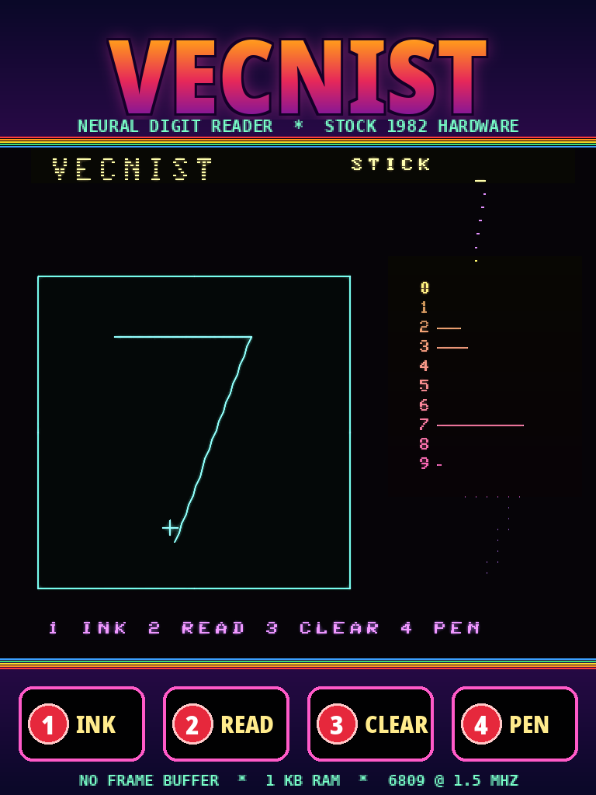
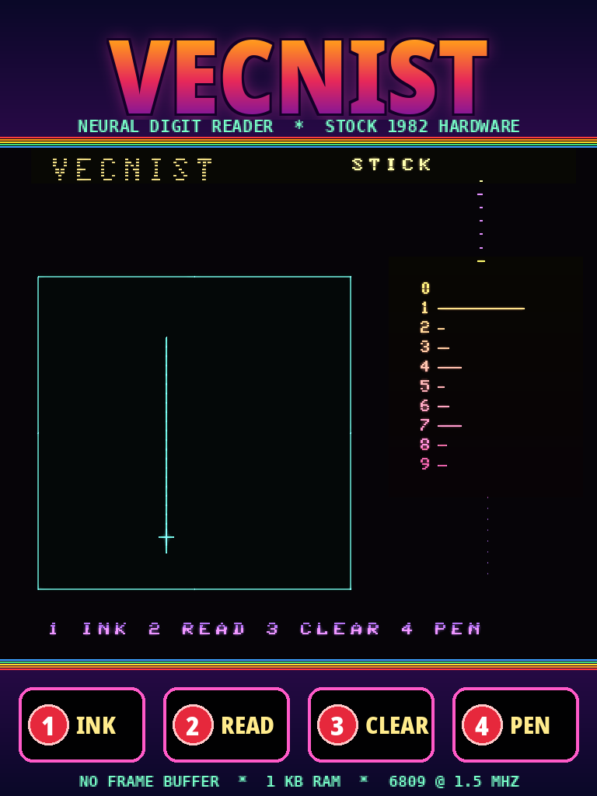
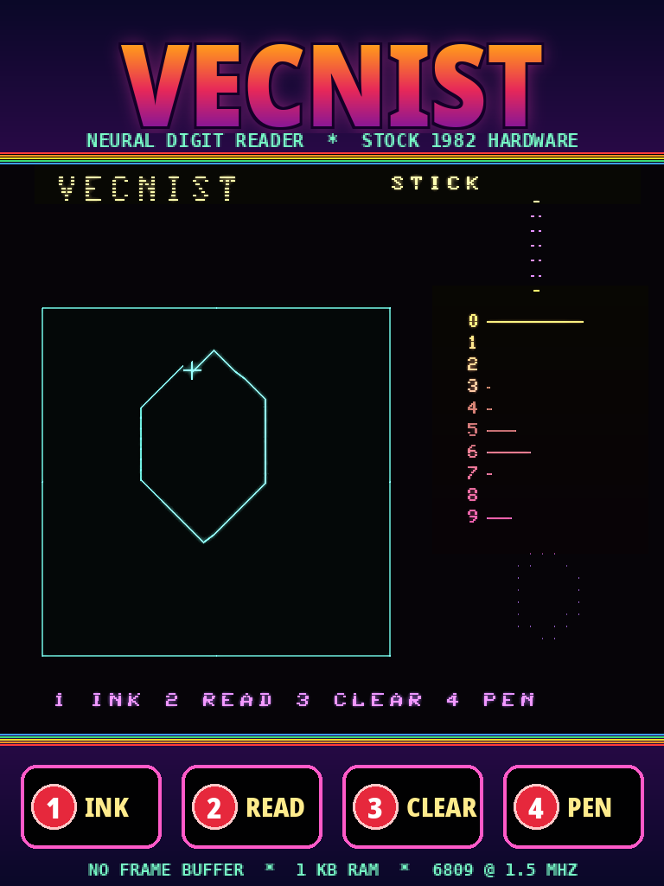
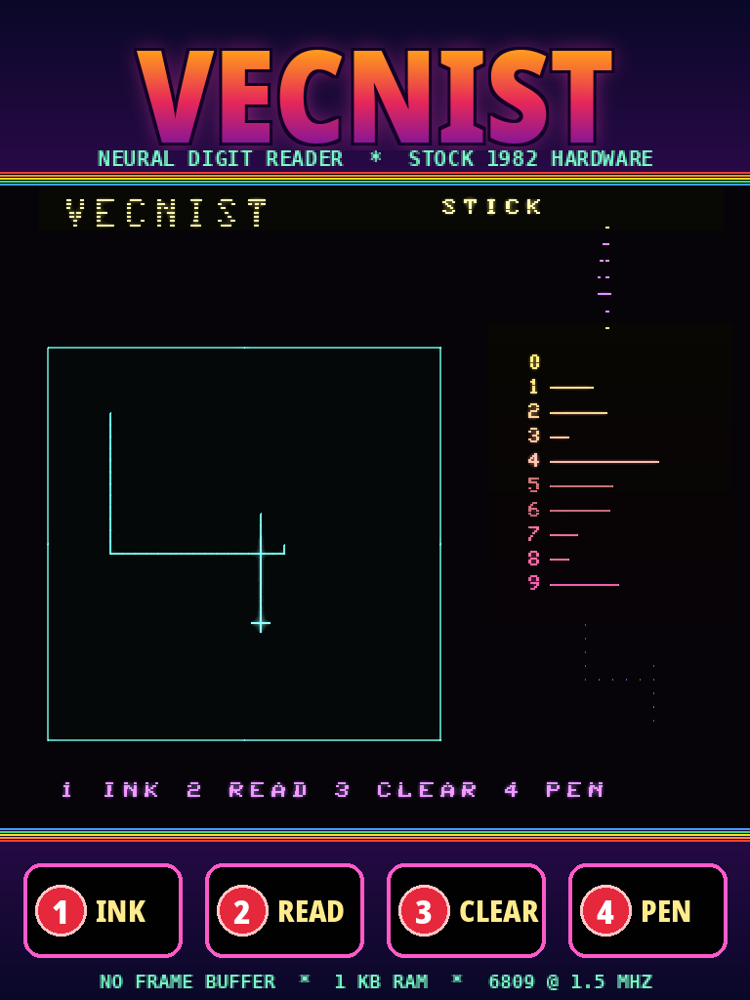

CPU
6809
Motorola, 1.5 MHz, 8-bit. The same chip that ran the BIOS in 1982.
A neural network on a stock 1982 Vectrex. No frame buffer. 1 KB of RAM.
Hold button 1 and draw a digit with the joystick. Lift the pen and the Vectrex reads it: the answer in the corner, a bar for every digit, and the 12×12 grid the network saw. It runs on a Motorola 6809 at 1.5 MHz. No coprocessor, no cloud, no co-anything.
Trained on the PC, using MNIST’s 60,000 handwritten digits. It reads on the 6809 itself.

Plenty of Vectrex projects run modern code on a modern processor and use the Vectrex as a display. This one runs entirely on the console’s own 6809, from an ordinary 12 KB cartridge image.
The demo draws a 1, a 7, a 0 and a 4 with a scripted joystick, and the cartridge reads each one. It was recorded frame by frame in MAME. The glow is a phosphor-decay filter: a real vector tube glows, and MAME’s 60 Hz capture of a 50 Hz console needs it to look whole.
The colours come from the overlay: Vectrex games came with a printed plastic film over the screen, and VecNIST has one too (overlay/vecnist.png).



857a5285ac59c64ded7ebcad4223b208If you don’t have a Vectrex, try it for yourself in MAME. It needs the
Vectrex BIOS (vectrex.zip) in its ROM path.
mame vectrex -cart vecnist.bin
The BIOS shows its own screen for about ten seconds, then the title, then the game. The joystick is the arrow keys (or a gamepad); MAME’s buttons 1–4 are the Vectrex’s.
MUL per point and no division. The box is centred in a 12×12 grid of bits, and
consecutive points are joined cell by cell.MUL, into
24 bits. The highest score is the answer.git clone https://github.com/magneato/vecinst cd vecinst ./setup.sh # lwasm, MAME, Python + numpy (and checks for the Vectrex BIOS) ./build.sh # build/vecnist.bin, checked against Vide's own assembler if Vide is installed ./run.sh # play it in MAME (./run.sh --video vecinst.mp4 records the demo)
The folder is also a Vide project (VecNISTProjectProperty.xml). Link
it into Vide’s projects folder and assemble it there; the bytes are the same as lwasm’s. To retrain,
run ./get_mnist.sh and then python3 train/vecnist.py train (about 40 seconds on a PC).